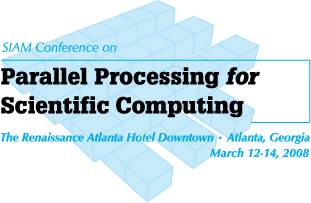

SIAM PP08 Workshop for HPC on Large Graphs
The Rennaissance Atlanta Hotel Downtown
Atlanta, GA
12-14 March 2008
Scope and Goals:
Graphs are a fundamental representation of information that spans the widest possible range of computing applications. They are particularly important to computational biology, web search, and knowledge discovery. As the sizes of the graphs increase, the need to apply High Performance Computing (HPC) to solve these problems is growing dramatically. This workshop represents a unique opportunity for the community of researchers in this field and focus on the technical issues associated with applying HPC to large graph problems. The workshop will feature several invited speakers drawn from the leaders in this new and rapidly growing field.
Location:
This workshop is co-located with SIAM PP08, held 12-14 March 2008, at the Rennaissance Atlanta Hotel Downtown in Atlanta, GA. Registration information for PP08 can be found at here.
Program:
Thursday, March 13
- 1:30-1:55 Analytic Theory of Power Law Graphs
- Jeremy Kepner, Massachusetts Institute of Technology
- An analytical theory of power law graphs is presented based on the Kronecker graph generation technique. The analysis uses Kronecker exponentials of complete bipartite graphs to formulate the sub-structure of such graphs. This allows various high level quantities (e.g. degree distribution, betweenness centrality, diameter, eigenvalues, and isoparametric ratio) to be computed directly from the model parameters. The implications of this work on ``clustering'' and ``dendragram'' heuristics are also discussed.
- 2:00-2:25 Parallel Algorithms for Small-world Network Analysis and Partitioning
- David A. Bader, Georgia Institute of Technology
- We present SNAP, a parallel library for exploratory analysis and partitioning of small-world networks. SNAP includes fast, parallel implementations of fundamental graph-theoretic kernels and topological analysis metrics (e.g., breadth-first search, connected components, betweenness centrality), as well as novel community structure detection algorithms. In the talk, we highlight algorithmic details and optimizations to achieve scalable parallel performance on small-world graph instances.
- 2:30-2:55 The MultiThreaded Graph Library
- Jonathan Berry, Sandia National Laboratories
The MultiThreaded Graph Library (MTGL) is a set of open-source codes for graph algorithms that target emerging massively multithreaded architectures. This library is based upon a kernel of the Boost Graph Library, though it does not require Boost. MTGL codes run on serial workstations, and can run on the Cray MTA/XMT supercomputers. Much of the detail inherent in the programming model of the latter machines is abstracted away from the application programmer. - 3:00-3:25 Tensor Decompositions for Analyzing Multi-Link Graphs
- Danny Dunlavy, Tammy Kolda, and Philip Kegelmeyer, Sandia National Laboratories
Link analysis of data represented by a graph typically focuses on a single type of connection. However, often we want to analyze data that has multiple linkages between objects. The goal of this talk is to show that tensors and their decompositions provide a set of tools for multi-link analysis. We provide examples of how tensors can be used to understand the structure of document spaces and define similarities based on multiple linkages.
- 10:00-10:25 Parallel Primitives for Computation with Large Graphs
- Aydin Buluc and John R. Gilbert, University of California, Santa Barbara
Large combinatorial graphs appear in many applications of high-performance computing, including computational biology, informatics, analytics, web search, dynamical systems, and sparse matrix methods. High-performance combinatorial computing is much less well understood than high-performance numerical computing, where there are standard algorithmic primitives and a deep understanding of effective mappings of problems to computer architectures. Here we describe the usage and implementation of sparse generalized matrix-matrix multiplication as a primitive operation for high-performance computing on large graphs. - 10:30-10:55 Kronecker Graphs
- Jure Leskovec, Carnegie Mellon University
Given a large, real graph, how can we generate a synthetic graph that is similar, i.e., it has similar degree distribution, diameter, spectrum, etc.? I will introduce "Kronecker graphs" model, which naturally generates graphs with above properties, and present a fast and scalable algorithm for fitting Kronecker model to real networks. Experiments on large real networks show that Kronecker mimics well the patterns found in target graphs. Once fitted, the model can be used for anonymization, extrapolations, and graph summarization. - 11:00-11:25 High Performance Combinatorial Techniques for Processing Dynamic Interaction Networks
- Kamesh Madduri, Georgia Institute of Technology
Graph abstractions are extensively used to model temporal data streams from socio-economic interactions, the world-wide web, and communication networks. For tractable analysis of massive temporal data sets, we require holistic schemes that couple HPC techniques, dynamic graph algorithms, and social network analysis kernels. In this talk, we present a computational framework for the topological analysis of dynamic networks: we experiment with several graph representations, identify key analysis kernels to be optimized, and discuss parallel algorithms for large-scale graph analysis. - 11:30-11:55 Array Based Betweenness Centrality
- Eric Robinson, Northeastern University
The betweenness centrality metric measures the importance of a node in a graph by examining the number of shortest paths through it. A natural translation of a sequential BC algorithm using linear algebraic notation is shown. A batching parameter shifts this algorithm betweenO(E) and O(V^2) space, possibly providing constant speedup for small batch values. When implemented in pMatlab, both sequential and parallel algorithms are shown to have reasonable performance compared to their C counterparts.
Workshop Co-Chairs:
- Prof. David A. Bader, Georgia Institute of Technology
- Prof. John R. Gilbert , University of California, Santa Barbara
- Dr. Jeremy Kepner, MIT Lincoln Laboratory